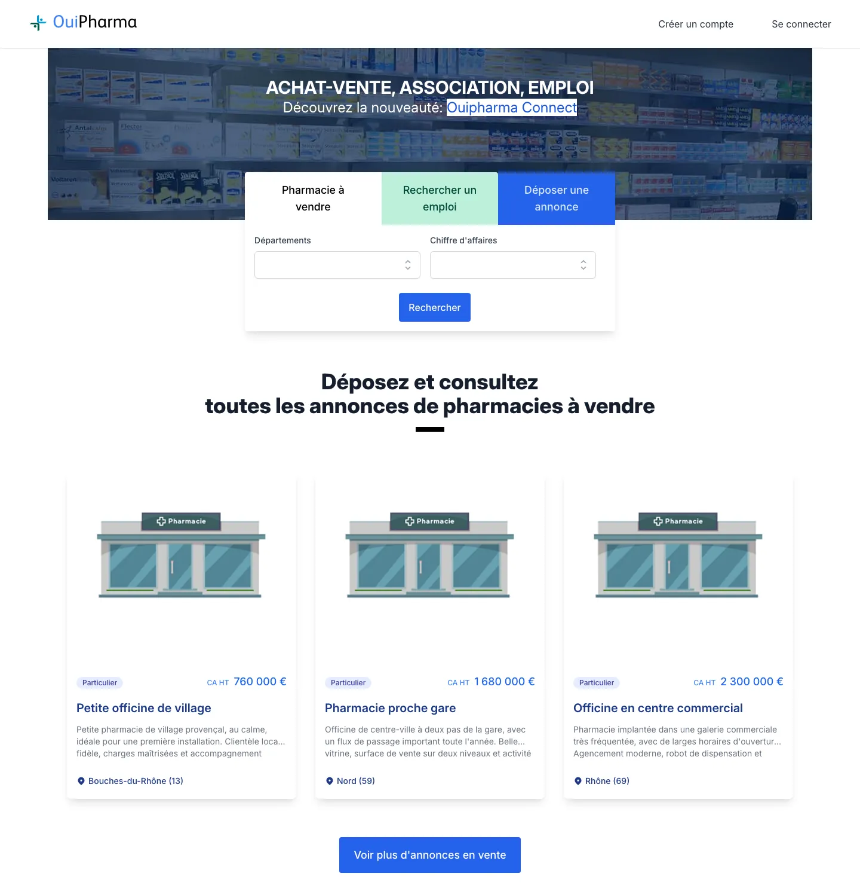
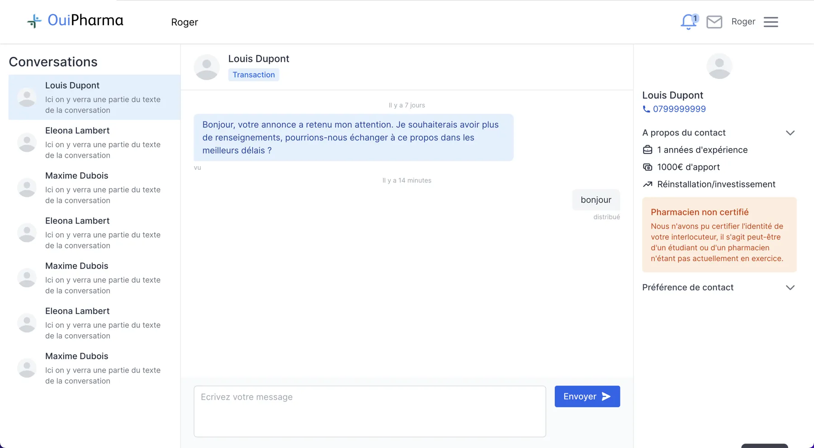

매물 목록
이 프로젝트에서 처음 개편한 페이지입니다. 도시 링크가 길게 이어지던 열을 페이지 하단으로 옮기고, 매물이 화면 전체를 쓰도록 했습니다. 예시는 루아르아틀랑티크(Loire-Atlantique) 도입니다.
약국 매물, 구인 공고, 약사를 위한 콘텐츠를 다루는 약국 마켓플레이스의 프론트엔드를 단계적으로 개편했습니다.


Ouipharma는 약사를 위한 매물·공고 플랫폼입니다. 약국을 사고팔거나, 동업자를 찾거나, 구인 공고를 올리고 볼 수 있습니다.
2021년 3월, 이미 몇 년째 운영 중이던 사이트에 합류했습니다. 처음에는 다른 개발자 1명과 함께 일했고, 이후에는 필요할 때 백엔드 지원을 받으며 프론트엔드를 혼자 담당했습니다.
CEO가 사이트 현대화를 원했고, 저는 페이지별로 인터페이스를 개편하고, 모바일에 맞게 조정하고, 사용자 영역의 화면을 퍼블리싱하는 일을 맡았습니다. 디자인 제안도 했으며, CEO와 함께 SEO 개선 작업을 했습니다.
이와 함께 기존 CSS 라이브러리(Semantic UI, 이후 Bootstrap)를 Tailwind.css로 교체했습니다.
매물
메인 페이지와 내비게이션
콘텐츠
사용자 영역
CSS 코드
캡처를 클릭하면 크게 볼 수 있습니다.
이 프로젝트에서 처음 개편한 페이지입니다. 도시 링크가 길게 이어지던 열을 페이지 하단으로 옮기고, 매물이 화면 전체를 쓰도록 했습니다. 예시는 루아르아틀랑티크(Loire-Atlantique) 도입니다.
새 레이아웃입니다. 주요 정보를 위쪽에, 가입 폼을 오른쪽에 배치하고, 모바일 버전을 새로 구성했습니다.
글 목록을 그리드로 바꾸고 작성자, 날짜, 읽는 시간을 표시했습니다. 글 상세 페이지에는 여백이 넉넉한 레이아웃, 공유 버튼, Glide.js로 만든 ‘다른 글 모두 보기’ 캐러셀을 적용했습니다.
구독 요금제 페이지를 새로 만들고, 약국 매각, 직원 구인, 동업, 투자 등 목적별로 구성했습니다.
메인 페이지는 두 단계로 바뀌었습니다. 2020년에 이전 팀이 검색 탭을 추가했고, 2022년에 제가 검색 필터, 매물 카드, 버튼, 모바일 버전을 개편했습니다.
예시: 메시지 페이지를 디자인 제안부터 퍼블리싱까지, 데스크톱과 모바일로 작업했습니다.


처음에는 개편한 페이지가 아직 개편하지 않은 페이지와 어울리도록 가볍게 수정했습니다.
결국 2년 동안 거의 모든 페이지를 개편했습니다. 페이지 간 일관성은 유지했지만, 공통 기준이 없어서 빠뜨린 부분은 없는지, 페이지마다 작은 차이가 생기지 않았는지 확인하기가 어려웠습니다.
다시 한다면, 사이트 전체의 디자인 시안이나 디자인 시스템에서 출발하겠습니다. 그러면 이런 확인 작업이 더 쉬워지고, 더 과감한 디자인을 선택할 수 있을 것입니다.
캡처는 사이트의 로컬 복사본에서 가상의 매물과 연락처로 촬영했습니다. 연도는 해당 시점의 사이트 상태를 나타내며, 화면에 보이는 일부 요소는 다른 팀원이 추가한 것입니다.